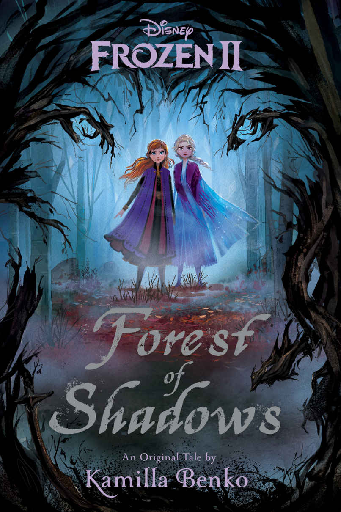
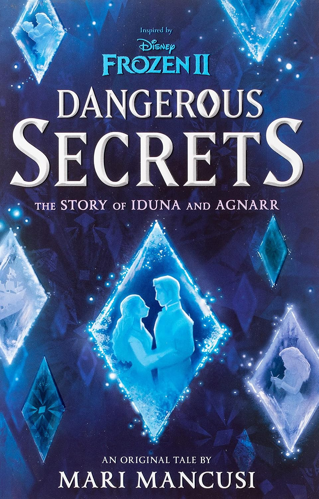
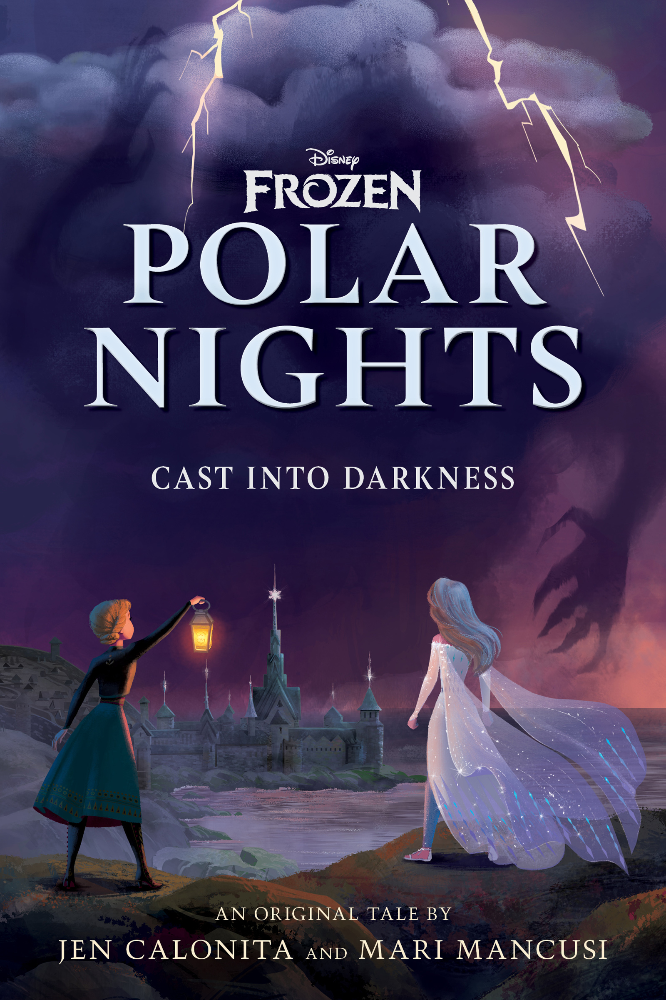

小说封面
官方授权小说封面
🎨 图鉴 · 衍生作品
小说封面
官方授权小说封面
6
本卷页数
🖼️
图鉴
中/英
双语
📚 衍生作品
小说封面
官方授权小说的封面设计与内容简介——从电影小说化到前传、改写与后传。
7
小说
2 部
电影
正典
分层
衍生
作品
📚 《冰雪奇缘》系列拥有丰富的官方授权小说，从电影小说化到前传、后传、改写小说，每一本都扩展了电影的世界观。本图鉴收录官方小说的封面设计与内容简介。
📖 官方小说封面

Frozen Junior Novel
《冰雪奇缘》官方青少小说化改编，完整还原电影 F1 的故事，适合 8-12 岁读者。包含电影中未出现的额外场景与角色心理描写。

Frozen 2 Junior Novel
《冰雪奇缘 2》官方青少小说化改编，完整还原电影 F2 的故事。深入探索了艾莎听到召唤声后的心理变化，以及安娜在姐姐离开后的成长。

Conceal, Don't Feel
A Twisted Tale系列改写小说，探索“如果艾莎与安娜在童年被分开抚养会怎样”的平行宇宙。在这个世界中，艾莎被地精带走、安娜在王宫长大，姐妹直到加冕日才重逢。


Forest of Shadows
F2 前传小说，讲述艾莎在加冕后、F2 事件前的故事。艾莎在魔法森林边界发现了神秘的暗影力量，必须在不暴露魔法的情况下解决危机。


Dangerous Secrets
F1 前传小说，讲述艾格纳国王与伊杜娜王后的爱情故事。伊杜娜的北境民族身份、她如何拯救艾格纳、以及他们如何面对两国之间的仇恨，都在本书中揭晓。


Polar Nights
F2 后传小说，讲述艾莎成为第五灵后在魔法森林的生活。她需要学习如何平衡第五灵的责任与对家人的思念，同时面对一个新的威胁。

All Is Found
F2 豪华版小说，包含完整的电影小说化以及额外的设定集内容。深入探索了阿塔霍兰、四灵、北境民族等 F2 核心设定的背景故事。
💡 小说的正典层级
《冰雪奇缘》系列小说有不同的正典层级：电影小说化（Junior Novel）和All Is Found属于正典，与电影完全一致；Forest of Shadows、Dangerous Secrets、Polar Nights 属于正典补充，扩展了电影世界观但不影响主线；Conceal, Don't Feel 属于非正典，是平行宇宙的改写故事。
📌 本页要点
本页核心要点：①📖 官方小说封面。来源：电影正典、官方设定集与官方小说综合梳理。